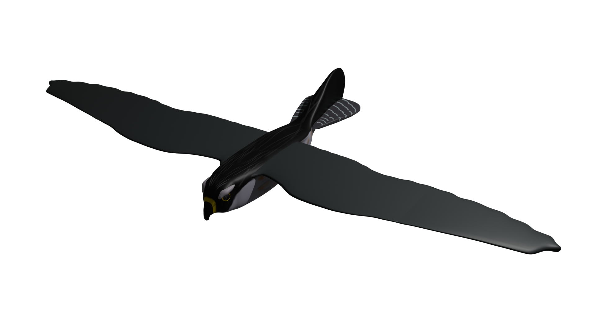
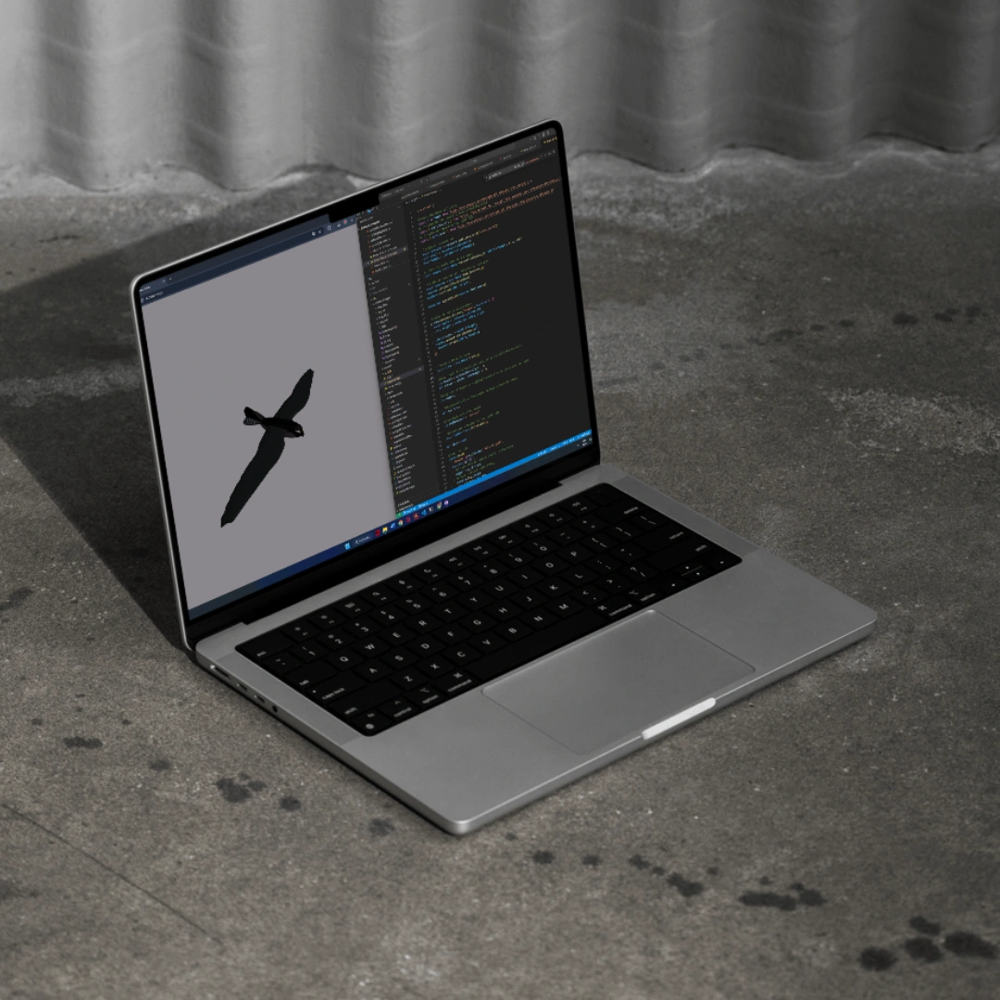

1. Le Contexte
Dans le cadre de mon TFA, j’ai dû réfléchir à la conception d’un site autour d’une technologie actuelle appliquée dans un futur proche. L’objectif : réfléchir à une innovation plausible, mais aussi anticiper ses impacts qu’ils soient positifs ou négatifs. Je me suis intéressé aux drones, en particulier à leurs possibilités d’évolution dans des milieux naturels protégés. J’ai imaginé une histoire autour de drones biomimétiques en forme d’oiseaux. Dans le contexte que vous allez découvrir, les drones auront un rôle positif, en effet, ils vont servir à aider à rechercher une personne portée disparue.
2. Le concept
SkyGuard met en scène une mission de secours fictive, menée en 2035, dans une région vallonnée (voire montagneuse par endroits) protégée. Une personne a disparu, et les secours déploient des drones silencieux, autonomes, volants en essaim, conçus pour :
- reproduire le vol naturel des oiseaux via des ailes battantes;
- se recharger en vol grâce aux courants ascendants;
- transmettre des données en temps réel aux équipes au sol.
Le récit permet de critiquer la technologie autant que de la valoriser : les capteurs thermiques sont imparfaits, les habitants du village sont méfiants, et même la personne recherchée prend peur en voyant ces «oiseaux» tourner autour d’elle.
3. Les étapes
Avant de me lancer dans la phase de développement, j’ai d’abord conçu un premier «plan» Figma. Cet outil m’a permis de structurer mes idées et de mieux visualiser le positionnement des différents éléments sur la page. Une fois cette première version terminée, je l’ai retravaillée en remplaçant les images issues d’internet par mes propres illustrations et rendus 3D.
4. Direction artistique & visuelle
Pour aider tout un chacun à visualiser le drone et ses technologies embarquées, j’ai réalisé plusieurs illustrations fixes sur Blender et Photoshop. Ces visuels, accessibles sur le site, permettent de vous rendre compte de la forme du drone.
Ces réalisations offrent une immersion rapide et intuitive dans l’univers de SkyGuard, en rendant tangible une technologie encore fictive mais réaliste.
5. Les outils
Tout au long de ce projet, j’ai utilisé différents logiciels : Photoshop et Illustrator pour la création d’illustrations 2D, Blender pour les rendus 3D, et enfin Figma pour préparer la mise en page avant le développement.
6. Conclusion
SkyGuard est un projet qui mêle réflexion technologique, sensibilité écologique et narration immersive. En imaginant une innovation plausible, j’ai cherché à questionner autant qu’à proposer. Ce travail m’a permis d’explorer des compétences variées — de la modélisation 3D à la conception d’interface — tout en développant une vision critique sur l’impact des technologies futures.